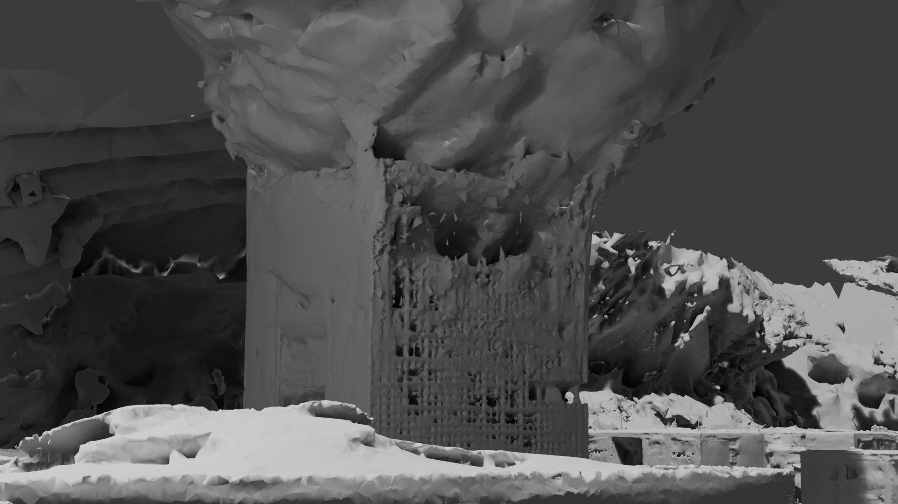

Please click the videos for better view.
Abstract
While Gaussian Splatting (GS) demonstrate efficient and high-quality scene rendering and surface extraction, they fall short in handling large-scale surface extraction. To overcome this, we present ULSR-GS, a framework dedicated to high-fidelity surface extraction in ultra-large-scale scenes, addressing the limitations of existing GS-based mesh extraction methods. Specifically, we propose a point-to-photo partitioning approach combined with a multi-view optimal view matching principle to select the best training images for each sub-region. Additionally, during training, ULSR-GS employs a densification strategy based on multi-view geometric consistency to enhance rendering and surface extraction details. Experimental results demonstrate that ULSR-GS outperforms other state-of-the-art GS-based works on large-scale benchmark datasets, significantly improving both rendering quality and surface extraction accuracy in complex urban environments.
Partition Example
Merge Partition Results
Comparison With GS-based SOTA

Ours

2DGS
Ours
PGSR
Ours

GOF
Ours
SuGaR
Images

BibTeX
@misc{li2024ulsrgsultralargescalesurface,
title={ULSR-GS: Ultra Large-scale Surface Reconstruction Gaussian Splatting with Multi-View Geometric Consistency},
author={Zhuoxiao Li and Shanliang Yao and Qizhong Gao and Angel F. Garcia-Fernandez and Yong Yue and Xiaohui Zhu},
year={2024},
eprint={2412.01402},
archivePrefix={arXiv},
primaryClass={cs.CV},
url={https://arxiv.org/abs/2412.01402},
}